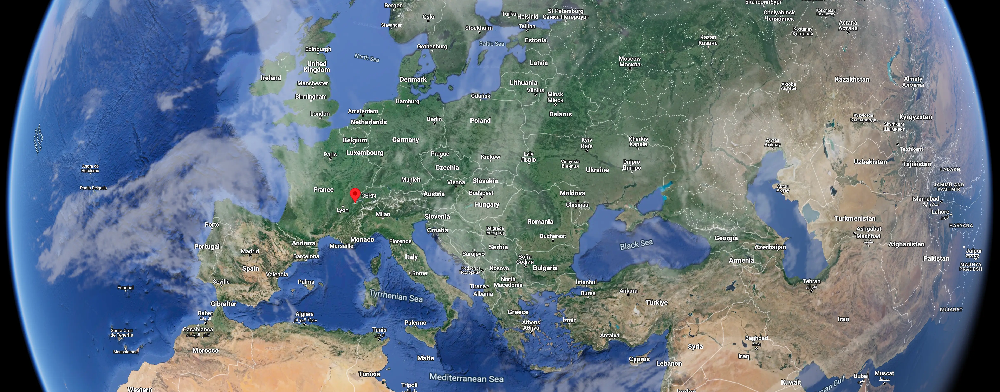
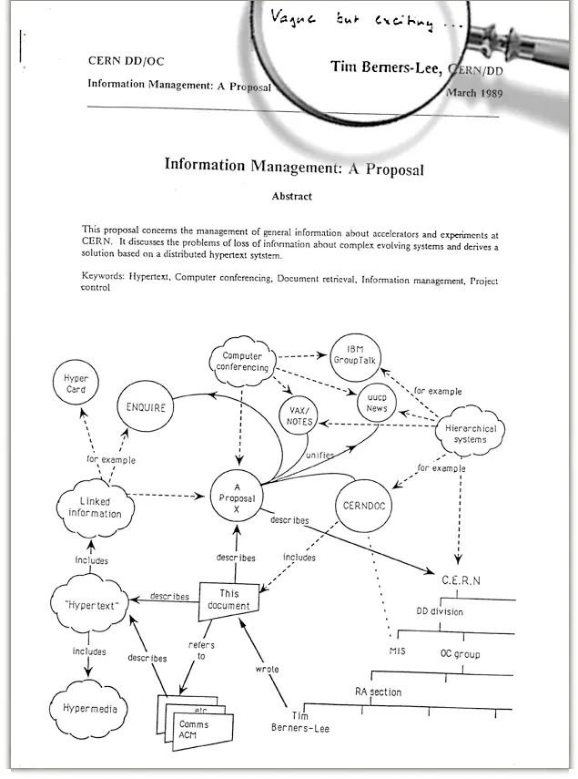
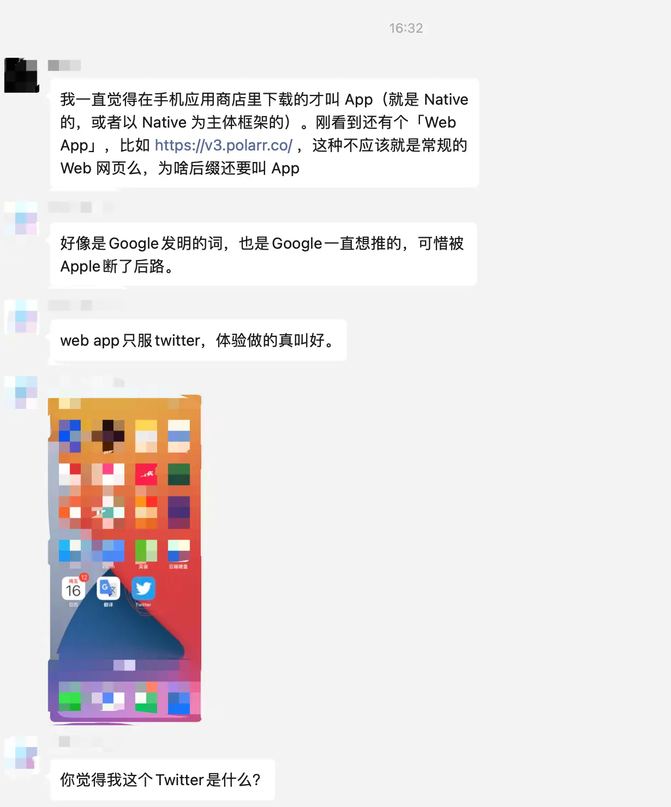
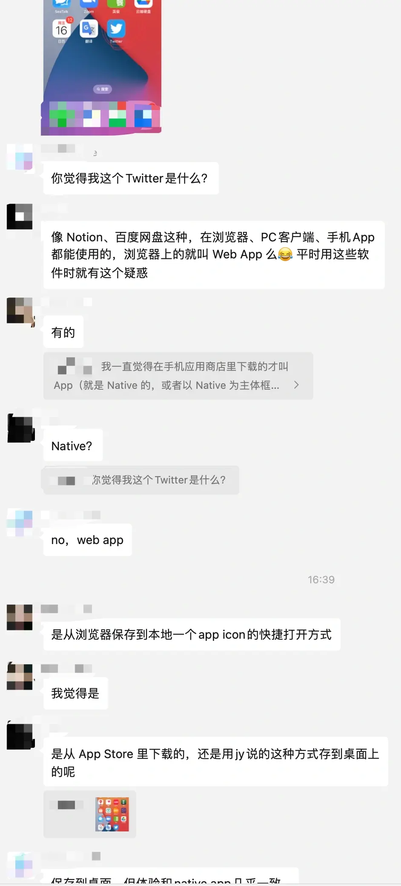
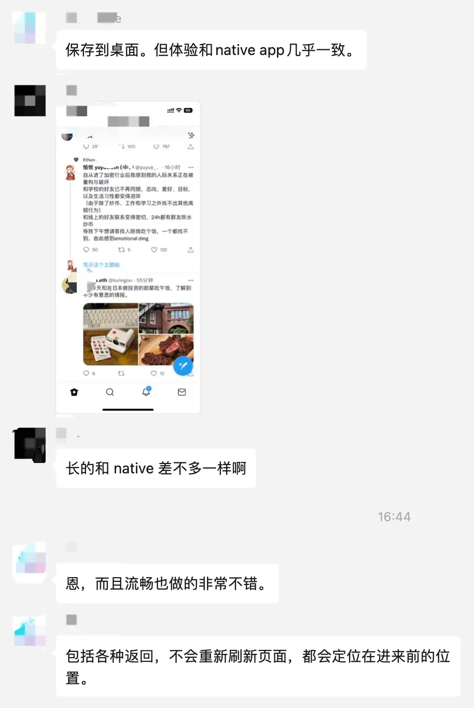
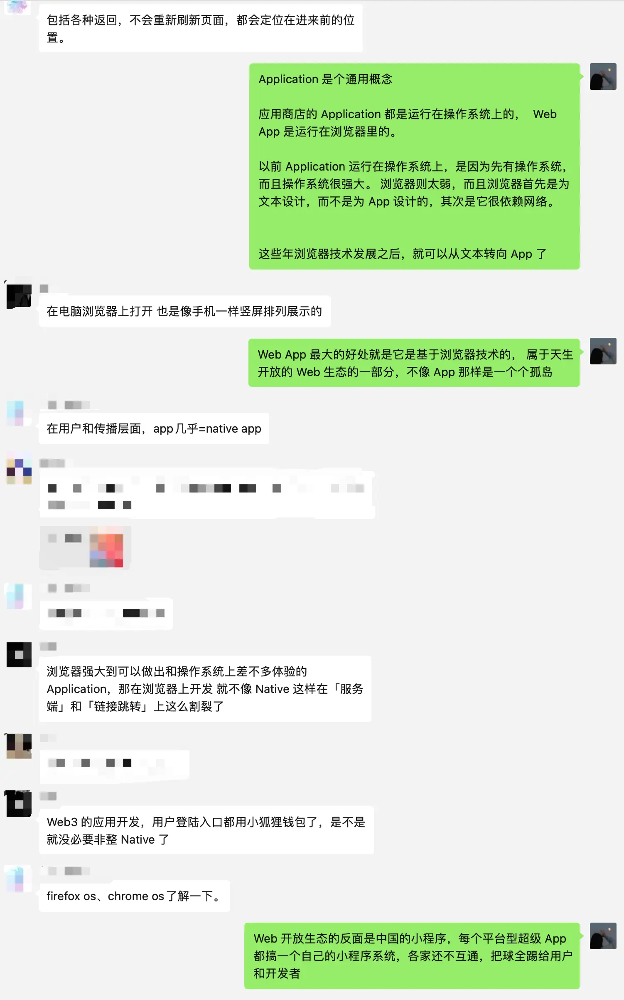

最近两三年，我从 Web 的发展历史中学到了很多，这也符合我个人学习复杂系统的风格：了解旧范式和旧范式的发展，然后转到新范式和前沿的问题。
Web 的初始范式隐喻：从“一个超文本应用”开始
1980 年: Tim Berners-Lee 与 ENQUIRE
1980 年 6 月至 12 月，Tim Berners-Lee 在庞大的 CERN 1 担任独立承包商。
工作期间，他了解到 CERN 大约有 10,000 名员工，他们的硬件、软件和个人要求各不相同，许多工作是通过电子邮件和文件交换完成的.
显然他看到了这里面的 Tech Space，也即存在通过技术来促进研究人员之间的信息共享和更新的空间，于是构建了一个名为 ENQUIRE2 的新的超文本原型系统。

以现在的眼光来看：
- 这个原型系统其实一个 App 级别的简单的超文本程序，也就是说类似于现在的维基百科，或者 Notion、Flomo、Obsidian 这样的笔记系统。
- 其实任何着眼于 App 级别的软件设计都是类似，整个系统会结合需求场景做过多的定义，要求用户必须按照规范来组织内容，这注定了它的扩展性其实有限。
- 真正的 Web，需要的是把维基百科、Notion、Flomo、飞书、Google Docs、Obsidian 等各种各样的 App 级别的东西在更高的层次上连接和组织起来的东西。
显然，只有更高程度的抽象，才能实现这种更通用的能力。
1989 年: 更高的抽象
1980 年末，Tim Berners-Lee 离开 CERN 之后，搞了 3 年和计算机网络有关的业务（那会儿的网络底层是 TCP/IP， 上层也有 FTP 等各种应用层协议）。作为一个很有技术理解与业务运转有深刻洞察的人，Tim Berners-Lee 搞的又是实时远程过程调用项目，显然从这段经验中吸收了很多网络的设计思想，然后在 1984 年又回到了 CERN。
阅历的增长和计算机网络的工作经验让他认识到，寄希望于通过一个 App 级别的工具来统一 CERN 的文档系统是不现实的，他需要通过某种方式链接不同的文档系统（CERN 共存了很多种文档系统，包括他自己搞的 ENQUIRE）:
Creating the web was really an act of desperation, because the situation without it was very difficult when I was working at CERN later.
Most of the technology involved in the web, like the hypertext, like the Internet, multifont text objects, had all been designed already.
I just had to put them together. It was a step of generalizing, going to a higher level of abstraction, thinking about all the documentation systems out there as being possibly part of a larger imaginary documentation system.
But then the engineering was fairly straightforward. It was designed in order to make it possible to get at documentation and in order to be able to get people — students working with me, contributing to the project, for example — to be able to come in and link in their ideas, so that we wouldn’t lose it all if we didn’t debrief them before they left.
Really, it was designed to be a collaborative workspace for people to design on a system together. That was the exciting thing about it.创建 Web 确实是一种绝望之举，因为我后来在 CERN 工作时，没有 Web 时候的情况非常糟糕（注：指的是多种文档系统工作，协同起来非常痛苦的情况）。
其实在哪个时候，与 Web 相关的大多数技术，如超文本、互联网(指底层的 internet，注意它和 World Wide Web 的区别)、多字体文本对象，都已经在实际应用的设计。我只需要把它们放在一起，对(所有的这些东西)进行一些概括抽象，进入更高的抽象层次，将所有文档系统视为可能是更大的一个想象文档系统的一部分。
但整体的工程设计相当简单。它的设计目的是获取文档，并让其他人——例如与我一起工作、为项目做出贡献的学生——能参与进来并链接他们的想法，这样即使这些人离职了，我们也不会失去这些想法。
实际上，Web 被设计为一个供人们一起在系统上进行设计的协作工作空间。 —— 这就是最让人兴奋的事情。—— Academy Achives 2007 年对 Tim Berners-Lee 的采访: Visionary of the Internet 3
基于这些理念，他设计并提交了 Web 提案 4, 如下：

同时还实现了人类第一个 Web 浏览器、第一个 Web 服务器、以及一个 Web 原型站点 http://info.cern.ch 5
最早的原型设计包含了三项最核心的技术，仅从名字上就能看出是为"链接不同的超文本系统"而生：
HTML: HyperText Markup Language. 超文本标记语言
The markup (formatting) language for the web.URI: Uniform Resource Identifier. 统一资源定位符
A kind of “address” that is unique and used to identify to each resource on the web. It is also commonly called a URL.HTTP: Hypertext Transfer Protocol.超文本传输协议
Allows for the retrieval of linked resources from across the web.
还是回到现在的眼光来看：
- 这三种元素设计高度抽象， 用户只需要遵循几个简单的规范就可以搞一套自己完全控制的文档系统(而不是在别人控制的软件结构中写自己的文档)，或是改造已有的文档系统让它可以连接到其他系统，这构成了现代 Web 的基础框架。
- 第一个浏览器，已经是一个可以容纳多个不同网页站点的容器空间。
- 这个时候的第一动机是链接不同的文档系统，这和当时的操作系统不同，没有更强的业务流需求驱动，自然也就没有 CSS/Javascript 这些后来才出现的东西。
总的来说，从第一个版本开始，Web 的基本架构就已经确定。
在应用层的高度抽象机制（当然比起 TCP/IP 这种更底层的抽象还是要具象了很多），天然的分布式开放性、形成了一个巨大的协同空间。
Tim Berners-Lee 最初的自上而下的设计和其目标已经达到，剩下的就是更加宏大的时代性驱动：个人计算机的发展、基于个人计算机的业务发展、网络开始作为人类活动的告诉信息媒介等等，开始反过来自下而上的驱动 Web 发展。
1991 年 ～ 2007: Mosaic、NetScape、IE 三个浏览器
这个时期是浏览器的早期阶段，期间几个标志性事件是：
1993 年: CGI
国家超级计算应用中心 (NCSA) 发布了 NCSA HTTPd Web 服务器，其中包括 CGI 的早期版本。这使得服务端的 Web 程序可以根据网页请求执行，标志着网络上动态内容的诞生。当然那个时候的动态内容很有限，比如提交个表单什么的。1994 年：CSS 被发明
CSS 最初由 Håkon Wium Lie 于 1994 年 10 月 10 日提出。1996 年由 W3C 机构背书产生 CSS1 推荐标准。其初始目标是对文档进行更好的排版控制，且主要是文档排版，甚至都没有很规范的“框架布局”机制。1995 年：JavaScript
1995 年，在 NetScape 工作的 Brendan Eich 发明了 JavaScript 并在 NetScape 浏览器 2.0 版本中引入。 这显然也是业务上有需求，且是一个新的技术特性，能够让 Netscape 浏览器保持领先。
仍然回到当前视野上来：
- 在这一阶段，由于时代背景和具象的需求限制了想象力，我们可以看到很多设计都是自下而上由业务需求驱动的，也没有过多的超前设计。
- CSS 最早目标多是针对文档排版（就像 Word 那样），用于二维网页布局的时候就很吃力，需要通过对一维流式布局的 hack 来实现很多在平面设计领域中很寻常的能力。
- JavaScript 的早期目标是用来处理一些网页中的小任务， 它并不是一个深思熟虑的语言。但好在实现通用图灵机的机制要求是简洁的， JavaScript 也同样是图灵完备的（拥有完整的顺序执行、条件分支执行、循环执行能力），只要 API 足够，它理论上仍然能实现任意其他语言能实现的能力。
- 由于 Web 的开放性，当这个系统越来越大之后，网页开发者和浏览器的开发者就需要互相兼容互相迁就，任何一个网页开发者都希望自己的网页能被浏览器正常解析，任何一个浏览器也都希望能解析任何一个网页。这共同形成了很强的已实现技术路径依赖，引入新技术必须要考虑对已有技术的兼容。这保证了开放性和可用性的同时，也为 Web 积累了很大的历史负债。
- 各种权威机构背书的标准制订也开始出现，比如 Tim Berners-Lee 领导的 W3C 一直引领 HTML、CSS 的规范制订，古老的 ECMA 机构接手了 Javascript 的标准制订6。
个人认为这三个浏览器以及这些新技术的引入，其实都算是一个思想范式下的产物，其发展路线就是在 Tim Berners-Lee 的浏览器原型上继续前进。
这个时期用户与内容的互动有限；网页纯粹是信息性的、静态的。但这注定只是一个短暂的阶段性现象。
因为 Web 的公开性以及便于访问的特点，全人类拥有了一个共同的信息空间媒介，这是以往任何时代都没有的工具。人们的需求量是在是太大了，量变的不断积累会带来质变，自下而上的需求不断驱动 Web 技术的前进，也对整个 Web 工程设计提出了更高的要求。
当人们对网站的要求不再是一个个简单的文本网页，而是一个完整的，能承载各种业务流逻辑的 App 时，人们对浏览器的要求也从一个单一的网页呈现工具转向一个全能的类操作系统平台。
Web 范式的转向：从”一个超文本应用“ 到 ”一个操作系统平台“
其实到这里的时候，就回到了我们比较熟悉的事情上了。
2000 年 ～ 2010 年: Amazon 云计算服务发展
这也是一个时代性的背景，这个时期主要就是远程的计算机集群和操作系统的虚拟化。服务端能力的极速发展，为瘦用户端提供了基础。
2008 年: V8 引擎
Chrome V8 Javascript 引擎7，极大改进了 JavaScript 的运行时能力和效率。
2009 年: ChromeOS
谷歌于 2009 年 7 月宣布了该项目，最初将其描述为一个 Cloud-first 操作系统，应用程序和用户数据将驻留在云中。 ChromeOS 主要用于运行网络应用程序。
2005年～ CSS3 标准
CSS3 标准从 2005 年就开始着手制定了。
它希望解决对更加动态、交互式的网页设计和布局的需求，这些设计和布局可以适应各种设备（响应式设计）、屏幕和用户交互，具体而言包括 Media 查询， FlexBox 模型、Grid 布局、更丰富的动画能力。
在工程化方面，它还将模块化引入 CSS 规范，允许独立开发和采用功能。
总之，就是加强在不同设备上的布局、交互能力、并且引入更加工程化的设计，以应对越来越复杂的需求。
2015 年: ECMAScript 6
2009 年 ES5 发布后，关于下一个版本的讨论几乎立即开始，直到 2015 年正式推出 ES6 标准。
ES6 标准最大的改进是原生支持了模块化能力、更方便的异步调用能力、改进了变量作用域、引入了更加面向对象的 Class 语法糖。
2015 年：PWA
Google 的 Alex Russell 和 Frances Berriman 创造了“渐进式 Web 应用程序”一词来描述利用现代浏览器支持的新功能的应用程序，包括 service worker、manifests 和其他 Web 特性功能。
2018 年：Apple 开始支持 PWA
当然，PWA 和 Apple 的商业生态是存在冲突的，Apple 对 PWA 的支持并不完整。
同样的，回到现在的眼光来看:
- 最基础的范式开始变为“像对待操作系统那样对待浏览器”，有了这个背景之后，整体的工程发展方向就非常清晰了。
- 标准的制订其实是落后于实际需要的，CSS3、ES6 这些新标准制订之前，已经由无数种类似的工程实践，比如 CSS 中的各种 hack 布局方式，JavaScript 中的 CommonJS、AMD 模块化规范，jQuery 对文档选择器的封装等。而 CSS3、ES6 标准很大程度上借鉴吸收了这些实践，可以说这些标准是整个 Web 社区推动的结果。
- 除了社区推动之外，回到“操作系统隐喻”上的 Web 设计，可以越来越多的借鉴操作系统 App 编程，吸收 Java、Python 等更加深思熟虑的语言设计。
总之，随着底层技术栈和工程架构能力的逐渐完备，Web 已经成为一个真正意义上的操作系统平台。而 Web Application 也逐渐变得成熟，越来越接近于 Native APP 的体验。
微信群里的一些讨论
Web 是信息时代影响最深远的革命性技术（可能都不需要加之一），而且它的发明人 Tim Berners-Lee 还在世，他对 Web 的看法非常值得跟踪。
本文最早是也是微信群中和 Web 相关的讨论触发，领域新人似乎总会有相似的困惑（这个朋友对一些现象也比较敏感）。
这里也做一个简短的讨论记录（为了逻辑衔接，对无关内容做了打码处理），来呈现一些具体的场景。




- European Organization for Nuclear Research, 欧洲核子研究中心，是一个由 23个成员国组成的政府间组织，成立于 1954 年，坐标在法国与瑞士边境的日内瓦西郊梅林 ↩
- https://www.w3.org/History/1980/Enquire/manual/, 根据伯纳斯-李的说法，这个名字源自于是他小时候看过的，对他影响深刻的一本指南书:《Enquire Within upon Everything》 ↩
- 原采访见：https://achievement.org/achiever/sir-timothy-berners-lee/#interview ↩
- 《编制万维网》一书对这段历史有详细的描写 ↩
- Web 20 周年时重建，域名和内容都保持了原状 ↩
- Netscape 于 1996 年向 ECMA International 提交了 JavaScript，部分原因是 ECMA 被认为具有更快的标准化进程，并且已经拥有标准化编程语言的经验。 ECMAScript 标准的第一版于 1997 年被 ECMA International 采用 ↩
- 这个名字来源于一种特定的汽车发动机引擎结构，也即 V8 汽车发动机，所以它不是版本号 ↩

人存于世，因缘际会
我是兴华，很高兴见到你